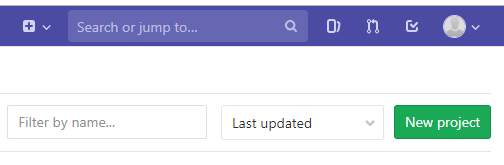
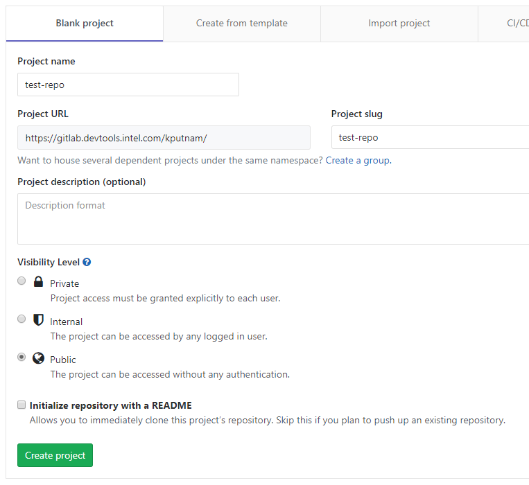
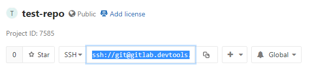

Migrate git repository from GitHub to GitLab¶
This guide assumes that you’re comfortable using git from the command line. Though these instructions refer to Intel internal instances of Github and GitLab, the basic steps could be applied to any two remote git repositories.
Create an account in GitLab using AGS (https://ags.intel.com)
Create a New Project
You may want to make it public, and do not initialize it. I called mine “test-repo.” It needs to be 100% empty:
Grab the clone URL:
Open a terminal and navigate to the GitHub repo that you want to migrate to GitLab and change the remote. Make sure that your local instance of the repo is up to date first.
# create a clone of the github repository you want to migrate git clone git@github.intel.com:OTC-TCS/documentation-template.git # create the new remote git remote add gitlab-new ssh://git@gitlab.devtools.intel.com:29418/kputnam/test-repo.git # verify that it added properly cat .git/config
# note the last remote entry [core] repositoryformatversion = 0 filemode = false bare = false logallrefupdates = true [remote "origin"] url = git@github.intel.com:OTC-TCS/documentation-template.git fetch = +refs/heads/*:refs/remotes/origin/* [branch "master"] remote = origin merge = refs/heads/master [remote "gitlab-new"] url = ssh://git@gitlab.devtools.intel.com:29418/kputnam/test-repo.git fetch = +refs/heads/*:refs/remotes/gitlab-new/*
# push all branches to new remote git push gitlab-new --allYou’re done